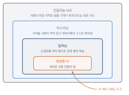
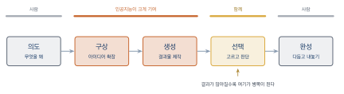

AI와 디지털 아츠의 세계
이 장을 마치면
- 창작 도구의 변화가 예술을 어떻게 바꾸어 왔는지 설명할 수 있다.
- 인공지능·머신러닝·딥러닝·생성형 AI의 관계를 구분하여 말할 수 있다.
- 이미지·글·음악·영상 각 매체에서 오늘날 인공지능으로 무엇이 가능한지 안다.
- 창작 과정에서 인공지능에게 맡길 일과 사람이 쥐고 있어야 할 일을 구분할 수 있다.
- 실습에 필요한 무료 도구의 계정을 만들고 첫 결과물을 생성할 수 있다.
문장 하나를 입력하면 몇 초 만에 그림이 나온다. 흥얼거린 멜로디를 올리면 편곡된 곡이 돌아온다. 그림 한 장을 넣으면 움직이는 영상이 된다. 불과 몇 년 전만 해도 전문가의 손과 값비싼 장비가 있어야 가능하던 일이 이제는 웹 브라우저 하나로 이루어진다. 이 변화는 창작을 배우려는 사람에게 기회이면서 동시에 불안이기도 하다.
이 장에서는 본격적인 실습에 들어가기 전에 지금 무슨 일이 벌어지고 있는지를 차분히 살펴본다. 먼저 창작의 도구가 바뀔 때마다 예술이 어떻게 달라졌는지를 역사에서 확인하고, 인공지능이라는 말이 정확히 무엇을 가리키는지 정리한다. 이어서 매체별로 오늘날 실제로 가능한 일과 아직 어려운 일을 구분해 보고, 마지막으로 실습 환경을 준비하여 첫 결과물을 직접 만들어 본다.
1.1 창작의 도구는 계속 바뀌어 왔다
새로운 기술이 창작의 영역에 들어올 때마다 같은 논쟁이 반복되었다. 이것은 예술인가, 그리고 이제 화가는(연주자는, 작가는) 필요 없어지는가. 지금 인공지능을 두고 벌어지는 논쟁도 새로운 것이 아니다. 역사를 잠깐 들여다보면 지금 우리가 어디쯤 서 있는지 가늠할 수 있다.
사진기가 등장했을 때
1839년 사진술이 공개되었을 때 프랑스의 화가 폴 들라로슈는 오늘부로 회화는 죽었다고 말했다고 전해진다. 그럴 만도 했다. 초상화 한 점을 몇 주에 걸쳐 그리던 화가들은, 몇 분 만에 더 정확한 얼굴을 남기는 기계와 경쟁해야 했다. 실제로 초상화로 먹고살던 상당수 화가가 직업을 잃었다.
그런데 회화는 죽지 않았다. 대신 방향을 바꾸었다. 눈에 보이는 대로 정확히 옮기는 일을 사진에 넘겨준 화가들은 눈에 보이지 않는 것으로 옮겨 갔다. 빛의 인상을 포착하고 표현하려 한 인상주의, 형태를 해체한 입체주의, 대상 자체를 버린 추상회화가 사진 이후에 등장했다는 사실은 우연이 아니다. 기계가 재현을 맡자, 사람은 해석을 맡게 된 것이다.
새 도구는 기존 창작자를 없애기보다 창작자가 하는 일의 성격을 바꾼다. 기계가 잘하는 일이 넘어가면, 사람의 일은 그 위층으로 올라간다.
신디사이저, 샘플러, 그리고 디지털 편집
음악에서도 같은 일이 있었다. 1980년대 신디사이저와 드럼 머신이 보급되자 진짜 악기가 아니다, 연주자의 일자리를 뺏는다는 비판이 쏟아졌다. 실제로 세션 드러머의 일감은 줄었다. 그러나 동시에 힙합과 일렉트로닉 댄스 뮤직처럼 그 기계 없이는 존재할 수 없는 장르가 통째로 태어났다. 샘플링은 처음에 남의 음악을 훔치는 행위로 취급받았지만, 지금은 하나의 작법으로 자리 잡았고 그 과정에서 저작권 제도 역시 바뀌었다.
시각 분야에서는 1990년대 포토샵이 같은 역할을 했다. 암실에서 며칠 걸리던 보정이 몇 분으로 줄었고, 사진은 더 이상 진실이 아니다라는 우려가 뒤따랐다. 오늘날 디지털 보정은 논쟁거리가 아니라 기본 소양이다. 다만 어디까지가 보정이고 어디부터가 조작인지를 가리는 직업 윤리가 그 자리를 대신하게 되었다.
그렇다면 지금은 무엇이 다른가
인공지능이 앞선 도구들과 똑같기만 한 것은 아니다. 적어도 두 가지가 새롭다.
첫째, 이전 도구들은 사람의 지시를 정확히 수행했다. 붓은 손이 움직인 대로 칠하고, 포토샵의 필터는 정해진 계산을 정해진 대로 한다. 반면 생성형 인공지능은 같은 지시에도 매번 다른 결과를 내놓는다. 도구가 결과의 일부를 제안하는 셈이다. 이 때문에 창작자의 작업은 지시에서 선택과 판단으로 무게 중심이 옮겨 간다.
둘째, 이전 도구들은 남의 작품을 재료로 삼지 않았다. 그러나 생성형 인공지능은 인터넷에 존재하는 방대한 창작물을 학습해 만들어졌다. 여기서 누구의 것을 재료로 썼는가라는, 앞선 도구들에는 없던 문제가 생긴다. 이 문제는 5장에서 본격적으로 다룬다.
사진기는 화가를 없애는 대신 사진가라는 직업을 만들었고, 신디사이저는 사운드 디자이너를, 디지털 편집은 리터처와 VFX 아티스트를 만들었다. 인공지능 역시 프롬프트 설계자, AI 아트 디렉터, 학습 데이터 큐레이터처럼 이전에 없던 역할을 만들어 내고 있다. 이 책이 목표로 하는 것도 결국 그 새로운 역할을 감당할 수 있는 사람이 되는 것이다.
1.2 인공지능이라는 말의 정리
인공지능artificial intelligence, AI이라는 말은 너무 넓게 쓰인다. 세탁기 광고에도, 챗봇에도, 자율주행차에도 같은 말이 붙는다. 이 절에서는 앞으로 이 책에서 쓸 용어를 정리해 둔다. 기술적으로 깊이 들어가지는 않지만, 이 구분을 해 두면 뉴스에서 접하는 이야기를 훨씬 정확하게 이해할 수 있다.
네 개의 동심원
인공지능, 머신러닝, 딥러닝, 생성형 AI는 나란히 놓인 별개의 기술이 아니라 안으로 겹쳐 들어가는 동심원에 가깝다.

그림 1.1에서 보듯 가장 바깥의 인공지능은 사람이 하던 지적인 일을 기계가 하게 만드는 모든 시도를 가리킨다. 여기에는 규칙을 사람이 일일이 적어 넣는 방식도 포함된다. 예를 들어 체온이 37.5도를 넘으면 발열로 판정한다처럼 조건을 손으로 정해 둔 프로그램도 넓은 의미에서는 인공지능이다.
그 안쪽의 머신러닝machine learning은 규칙을 사람이 적어 주는 대신 데이터에서 규칙을 스스로 찾아내게 하는 방법이다. 고양이를 알아보는 프로그램을 만든다고 해 보자. 귀가 뾰족하고 수염이 있고…처럼 조건을 적는 방식은 곧 한계에 부딪힌다. 대신 고양이 사진 수만 장을 보여 주고 이것들의 공통점을 스스로 찾아라라고 하는 것이 머신러닝이다.
다시 그 안쪽의 딥러닝deep learning은 머신러닝 중에서도 인공 신경망artificial neural network이라는 구조를, 그것도 여러 층으로 깊게 쌓아 쓰는 방법이다. 오늘날 실용적인 인공지능 성과의 대부분이 여기서 나왔다. 이 책에서 다루는 도구들은 사실상 전부 딥러닝 기반이다.
가장 안쪽의 생성형 AIgenerative AI는 딥러닝 중에서도 새로운 것을 만들어 내는 데 쓰이는 부류를 말한다. 이 구분이 이 책에서는 특히 중요하므로 절을 나누어 살펴본다.
판별하는 AI와 생성하는 AI
딥러닝 모델이 하는 일은 크게 두 갈래로 나뉜다.
판별 모델discriminative model은 주어진 입력이 무엇인지 맞히는 일을 한다. 사진을 보고 고양이인지 개인지 답하고, 이메일을 보고 스팸인지 아닌지 답하고, 엑스레이를 보고 이상이 있는지 답한다. 답은 이미 정해진 선택지 안에 있다.
생성 모델generative model은 없던 것을 만들어 내는 일을 한다. 고양이 사진을 새로 그려 내고, 이어질 문장을 써 내고, 다음 마디의 음악을 만들어 낸다. 정답이 하나로 정해져 있지 않고, 그럴듯한 결과가 무수히 많다는 점이 결정적인 차이다.
| 판별 모델 | 생성 모델 | |
|---|---|---|
| 하는 일 | 입력이 무엇인지 분류·예측 | 새로운 데이터를 만들어 냄 |
| 질문 형태 | “이것은 무엇인가?” | “이런 것을 하나 만들어 줘” |
| 정답 | 하나로 정해져 있음 | 여럿이 모두 타당할 수 있음 |
| 평가 | 정확도로 잴 수 있음 | 사람의 판단이 필요함 |
| 예 | 얼굴 인식, 스팸 필터, 의료 영상 판독 | 이미지 생성, 글쓰기, 작곡, 영상 생성 |
표 1.1의 마지막 줄, 즉 평가 항목이 창작자에게는 가장 중요하다. 판별 모델은 정답을 맞힌 비율로 성능을 잴 수 있지만, 생성 모델의 결과가 좋은지 나쁜지는 기계가 판정하기 어렵다. 잘 그렸다, 어울린다, 설득력이 있다를 판단하는 일은 결국 사람에게 남는다. 이것이 이 책에서 도구 사용법만큼이나 결과를 비평하는 눈을 강조하는 이유다.
인공지능이 만든 결과를 두고 맞았다·틀렸다로 말하기 어려운 경우가 많다. 하지만 사실 관계를 다루는 순간에는 이야기가 달라진다. 생성형 AI는 존재하지 않는 논문, 없는 사건, 틀린 연도를 자연스러운 문장으로 만들어 내며 이를 환각hallucination이라고 한다. 이미지·음악처럼 사실 여부를 따지지 않는 작업과, 자료 조사처럼 사실이 중요한 작업을 구분해서 다루어야 한다.
모델, 서비스, 그리고 이름들
실습에서 만나게 될 이름들도 미리 정리해 두자. 모델model은 학습을 마친 인공지능 그 자체를 가리키는 말이고, 서비스는 그 모델을 웹사이트나 앱으로 감싸 우리가 쓸 수 있게 만든 것이다. 예를 들어 어떤 그림 생성 서비스가 있다면, 그 뒤에서 실제로 그림을 만드는 것은 특정 이미지 생성 모델이다. 같은 모델을 여러 서비스가 쓰기도 하고, 한 서비스가 여러 모델을 골라 쓸 수 있게 해 놓기도 한다.
이 구분을 알아 두면 도구가 바뀔 때 당황하지 않는다. 서비스의 이름과 화면은 자주 바뀌지만, 그 뒤에 있는 모델의 종류(이미지 생성 모델인지, 언어 모델인지, 영상 모델인지)는 몇 가지로 정해져 있고 다루는 방식도 비슷하기 때문이다.
요즘은 하나의 거대한 모델을 먼저 방대한 데이터로 학습시켜 놓고, 여기에 약간의 조정을 더해 여러 용도로 쓰는 방식이 표준이 되었다. 이렇게 여러 응용의 토대가 되는 대형 모델을 파운데이션 모델foundation model이라고 한다. 우리가 쓰는 도구 대부분은 소수의 파운데이션 모델 위에 얹혀 있다. 도구는 많아 보여도 그 근본은 생각보다 적다는 뜻이며, 그래서 하나를 제대로 익히면 나머지로 옮겨 가기가 어렵지 않다.
1.3 매체별 지형: 지금 무엇이 가능한가
인공지능으로 무엇이든 만들 수 있다는 말은 과장이고, 쓸 만한 게 없다는 말도 사실이 아니다. 매체마다 성숙도가 다르고, 같은 매체 안에서도 잘되는 작업과 안되는 작업이 뚜렷이 갈린다. 이 절에서는 각 매체의 현재 위치를 솔직하게 정리한다. 이후 장들의 지도 역할을 하는 절이다.
이미지: 가장 성숙한 영역
이미지 생성은 네 매체 가운데 가장 앞서 있다. 한 장짜리 삽화, 콘셉트 아트, 배경, 제품 목업, 로고 시안 같은 작업은 이미 실무에서 쓰일 만한 수준의 결과가 나온다. 특정 화풍을 지정하는 일, 구도와 조명을 조절하는 일, 이미 있는 그림의 일부만 고쳐 그리는 일도 가능하다.
반면 아직 어려운 일도 분명하다. 그림 안에 글자를 정확히 넣는 일은 여전히 자주 실패한다. 손가락 개수처럼 사람이 예민하게 알아채는 세부도 종종 어긋난다. 무엇보다 같은 인물을 여러 장면에 걸쳐 똑같이 등장시키는 일이 까다로운데, 이것은 웹툰이나 그림책처럼 연속된 장면이 필요한 작업에서 결정적인 제약이 된다. 이 문제를 다루는 방법이 7장의 핵심 주제다.
글: 넓게 쓰이지만 검증이 필요한 영역
문장 생성은 품질 자체로는 놀라운 수준에 이르렀다. 아이디어를 확장하고, 개요를 잡고, 초고를 쓰고, 다듬고, 번역하고, 요약하는 일 모두 실용적으로 쓸 수 있다. 창작 쪽으로 보면 시놉시스, 캐릭터 설정, 대사, 시나리오, 카피라이팅에 특히 유용하다.
약점은 두 가지다. 하나는 앞서 말한 환각으로, 사실을 다루는 글에서는 반드시 사람이 검증해야 한다. 다른 하나는 무난함이다. 인공지능이 쓴 글은 문법적으로 매끄럽지만 어딘가 익숙하고 평균적인 인상을 준다. 이것은 모델이 데이터의 중심 경향을 따르기 때문에 생기는 성질로, 8장에서 이 무난함을 깨는 방법을 다룬다.
음악: 빠르게 따라붙는 영역
음악 생성은 최근 몇 년 사이 가장 극적으로 발전했다. 가사를 주면 노래로 불러 주고, 장르와 분위기를 지정하면 완결된 편곡을 만들어 준다. 영상 배경음악, 게임 루프 음악, 짧은 시그널 음악 같은 용도로는 지금 바로 쓸 수 있다.
한계는 긴 곡의 구조에 있다. 몇 분에 걸쳐 긴장을 쌓고 해소하는 전개, 곡 전체를 관통하는 주제의 발전 같은 것은 아직 사람이 설계해야 한다. 또한 만들어진 결과를 마디 단위로 세밀하게 고치는 일이 이미지만큼 자유롭지 않다. 10장에서 이 한계를 우회하는 작업 방식을 다룬다.
영상: 가장 빠르게 바뀌는 영역
영상 생성은 가장 최근에 실용화된 만큼 변화가 가장 빠르다. 짧은 분량, 이를테면 몇 초에서 십여 초 정도의 클립은 이미 인상적인 품질로 만들어진다. 정지 이미지를 움직이게 하는 작업, 카메라 움직임을 넣는 작업, 인물의 입 모양을 대사에 맞추는 작업이 가능하다.
어려운 점은 시간적 일관성이다. 장면이 길어질수록 인물의 얼굴이 미묘하게 바뀌고, 배경의 물건이 사라지거나 나타난다. 그래서 현재의 실무 방식은 긴 영상을 통째로 생성하는 것이 아니라, 짧은 클립을 여럿 만들어 편집으로 이어 붙이는 쪽이다. 11장에서 이 방식을 익힌다.
| 매체 | 지금 잘되는 일 | 아직 어려운 일 | 다루는 장 |
|---|---|---|---|
| 이미지 | 단일 이미지, 화풍 지정, 부분 수정 | 글자 삽입, 캐릭터 일관성 | 6–7장 |
| 글 | 기획, 초고, 대사, 퇴고, 번역 | 사실 검증, 개성 있는 문체 | 8장 |
| 음악 | 짧은 배경음악, 장르 재현, 보컬 | 긴 곡의 구조, 세밀한 수정 | 10장 |
| 영상 | 짧은 클립, 이미지 애니메이션 | 긴 장면의 일관성, 정확한 연기 | 11장 |
현재의 인공지능은 짧고 독립적인 결과물에 강하고 길고 일관된 결과물에 약하다. 이 성질은 네 매체에 공통으로 나타난다. 따라서 실무의 요령은 큰 작업을 작은 조각으로 쪼개어 각각을 생성한 뒤, 사람이 이어 붙이며 일관성을 관리하는 것이다.
표 1.2의 아직 어려운 일은 빠르게 줄어들고 있다. 이 책을 읽는 시점에는 이미 해결된 항목이 있을 수 있다. 반대로 잘되는 일이 갑자기 안 되는 경우도 있는데, 서비스가 모델을 교체하거나 정책을 바꾸면서 결과의 성격이 달라지기 때문이다. 표의 내용을 외우기보다, 자기가 쓰는 도구의 한계를 직접 시험해 보는 습관을 들이는 편이 오래 간다.
1.4 사람의 몫은 어디에 남는가
인공지능을 쓴다는 것은 작업의 일부를 넘긴다는 뜻이다. 그렇다면 무엇을 넘기고 무엇을 쥐고 있어야 하는가. 이 절의 답은 앞으로 이 책 전체를 관통하는 기준이 된다.
창작 과정을 다섯 단계로 나누어 보기
어떤 매체든 창작은 대체로 다음 다섯 단계를 거친다.
- 의도: 무엇을, 누구에게, 왜 만들 것인지 정한다.
- 구상: 아이디어를 벌리고 방향을 정한다.
- 생성: 실제 결과물을 만들어 낸다.
- 선택: 여러 결과 중에서 고르고 판단한다.
- 완성: 다듬고 맥락에 맞게 배치하여 내놓는다.
인공지능이 압도적으로 잘하는 단계는 구상과 생성이다. 아이디어를 스무 개 뽑아 달라거나 시안을 백 장 만들어 달라는 요구에는 사람이 상대가 되지 않는다. 반면 의도는 기계가 대신 정해 줄 수 없다. 무엇을 만들고 싶은지, 누구에게 닿기를 바라는지는 만드는 사람에게서만 나온다.
가장 흥미로운 것은 선택 단계다. 인공지능은 결과를 많이 만들어 주지만, 그중 무엇이 좋은지는 말해 주지 못한다. 오히려 결과가 많아질수록 고르는 일이 어려워진다. 예전에는 만들 수 있느냐가 병목이었다면, 이제는 고를 수 있느냐가 병목이다.

그림 1.2에서 색이 진한 구간이 인공지능이 크게 기여하는 단계다. 양 끝, 즉 의도와 완성이 사람에게 남는다는 점에 주목하자. 작업의 시작과 끝을 사람이 쥐고 있고, 그 사이의 반복적인 노동을 기계가 덜어 주는 형태다.
안목은 어떻게 기르는가
선택이 병목이라면 안목이 실력이 된다. 그런데 안목은 강의로 전수되지 않고 축적으로 생긴다. 다음 세 가지를 습관으로 삼기를 권한다.
첫째, 좋아하는 것에 이유를 붙여 본다. 어떤 이미지가 마음에 들었다면 왜 그런지 한 문장으로 적어 본다. 색이 적어서, 여백이 넓어서, 시선이 한 곳으로 모여서처럼 구체적일수록 좋다. 이 문장들이 나중에 그대로 프롬프트의 재료가 된다.
둘째, 버린 결과를 기록한다. 스무 장 중 한 장을 골랐다면 나머지 열아홉 장을 왜 버렸는지 짧게 남긴다. 고른 이유보다 버린 이유가 안목을 더 빨리 키운다.
셋째, 원본을 많이 본다. 인공지능이 만든 이미지만 계속 보면 판단 기준이 인공지능의 평균으로 수렴한다. 미술관에 가고, 좋은 영화를 보고, 실제 작가의 작품집을 뒤적이는 시간이 오히려 인공지능을 잘 쓰는 능력으로 돌아온다.
도구가 강력해질수록 무엇을 만들지 아는 사람과 모르는 사람의 격차는 좁아지지 않고 벌어진다.
협업의 세 가지 방식
인공지능과 일하는 방식은 크게 세 가지로 나눌 수 있으며, 어느 하나가 옳은 것은 아니다.
도구로 쓰기는 사람이 완전히 주도하고 인공지능은 일손을 덜어 주는 방식이다. 배경을 지우거나, 초고를 다듬거나, 자료를 요약하게 한다. 결과물의 저작자가 누구인지에 대한 논란이 가장 적다.
파트너로 쓰기는 인공지능이 내놓은 제안에서 아이디어를 얻고, 다시 지시를 주며 주고받는 방식이다. 이 책의 실습 대부분이 여기에 해당한다. 결과물에는 사람의 판단과 기계의 제안이 뒤섞인다.
재료로 쓰기는 인공지능이 만든 결과 자체를 소재로 삼아 다시 가공하는 방식이다. 생성된 이미지를 잘라 붙여 콜라주를 만들거나, 기계가 만든 이상한 결과를 일부러 활용하는 작업이 여기에 든다. 예술적 실험이 가장 활발한 영역이기도 하다.
모든 작업에 인공지능을 넣어야 하는 것은 아니다. 손으로 그리는 과정 자체가 작품의 의미인 경우, 특정 인물의 실제 목소리가 필요한 경우, 사실 확인이 절대적인 경우에는 쓰지 않는 편이 낫다. 어디에 쓰지 않을지 정하는 것도 이 도구를 다루는 능력의 일부다.
1.5 실습 준비: 계정과 첫 생성
이제 직접 만들어 볼 차례다. 이 절에서는 이 책의 실습에 쓸 도구를 정리하고, 계정을 만들고, 첫 결과물을 생성해 본다.
준비물
필요한 것은 다음 세 가지뿐이다.
- 웹 브라우저: 크롬, 엣지, 사파리 중 아무거나. 대부분의 도구가 설치 없이 브라우저에서 돌아간다.
- 이메일 계정: 구글 계정 하나면 대부분의 서비스에 가입할 수 있다.
- 작업 폴더: 만든 결과물을 모아 둘 폴더. 나중에 포트폴리오의 재료가 되므로 처음부터 정리해 두는 편이 좋다.
고성능 컴퓨터는 필요 없다. 실제 계산은 서비스 제공자의 서버에서 이루어지므로, 노트북이든 태블릿이든 브라우저만 돌아가면 된다.
가입할 때 학교 계정 대신 개인 계정을 쓰기를 권한다. 졸업 후 학교 계정이 정지되면 그동안 만든 작업물과 설정에 접근할 수 없게 된다. 또한 여러 서비스에 같은 비밀번호를 쓰지 말고, 무료 체험이 끝난 뒤 자동으로 유료 전환되는 서비스가 있으니 결제 정보를 입력할 때는 조건을 확인한다.
이 책에서 쓰는 도구
도구는 매체별로 하나씩만 확실히 익히면 충분하다. 아래는 계정만 만들면 무료로 쓸 수 있는 대표 도구들이다. 요금 정책과 무료 한도는 자주 바뀌므로, 최신 정보는 부록 A의 비교표와 각 서비스의 공식 안내를 확인하기 바란다.
문장을 주고받는 가장 기본적인 도구다. 글쓰기뿐 아니라 아이디어를 벌리고, 프롬프트를 다듬고, 결과를 비평하게 하는 데도 쓴다. 이 책의 거의 모든 장에서 등장하므로 하나는 반드시 계정을 만들어 두자. 세 서비스 모두 무료로 쓸 수 있는 범위가 있고, 하루 사용량이나 고급 모델 접근에 제한이 걸린다.
문장으로 그림을 만드는 도구다. 마이크로소프트 코파일럿과 Ideogram은 계정만 있으면 무료로 쓸 수 있어 수업 실습에 적합하다. 더 세밀한 제어가 필요해지면 7장에서 다른 도구로 넘어간다.
생성한 이미지를 자르고, 합치고, 글자를 얹는 작업에 쓴다. Photopea는 설치 없이 브라우저에서 돌아가는 포토샵 계열 편집기이고, Canva는 레이아웃과 템플릿 작업에 강하다. 인공지능이 못 하는 마무리는 결국 이런 도구로 한다는 점을 기억하자.
가사와 장르를 주면 노래를 만들어 준다. 가입 시 무료 크레딧을 주며, 매일 일정량이 회복되는 방식이 일반적이다. 10장에서 본격적으로 다룬다.
이미지를 움직이게 하거나 문장으로 짧은 영상을 만든다. 무료 크레딧이 가장 빨리 소진되는 영역이므로, 11장에서 크레딧을 아껴 쓰는 요령을 함께 다룬다.
이 책을 읽는 시점에 위 서비스의 이름이 바뀌었거나, 무료 정책이 달라졌거나, 아예 사라졌을 수도 있다. 그럴 때는 당황하지 말고 같은 역할을 하는 다른 도구를 찾으면 된다. 이 책이 가르치는 것은 특정 버튼의 위치가 아니라 무엇을 어떻게 지시해야 원하는 결과가 나오는가이고, 그 원리는 도구가 바뀌어도 그대로 통한다. 웹 에디션(https://dknife.github.io/AIContents/)의 도구 목록은 갱신되므로 그쪽을 참고해도 좋다.
첫 번째 프롬프트
대화형 AI에 접속해 다음을 그대로 입력해 보자. 웹 에디션에서는 프롬프트 오른쪽의 [복사] 버튼을 누르면 그대로 복사된다.
나는 시각디자인을 전공하는 대학생이야.
생성형 AI가 시각디자인 실무를 어떻게 바꾸고 있는지
초보자도 이해할 수 있게 설명해 줘.
그리고 내가 지금부터 준비하면 좋을 역량 세 가지를
이유와 함께 알려 줘.시각디자인 자리에는 각자의 전공을 넣는다. 답이 돌아오면 그대로 받아들이지 말고 다음을 확인해 보자.
- 내가 아는 사실과 어긋나는 부분이 있는가?
- 너무 일반적이어서 어느 전공에 넣어도 말이 될 법한 문장은 어느 것인가?
- 더 알고 싶은 부분은 어디인가?
세 번째 항목이 나왔다면 바로 이어서 물어보자. 대화형 AI의 진짜 쓸모는 첫 답변이 아니라 두 번째, 세 번째 질문에서 나온다.
방금 답변 중 두 번째 역량에 대해서만 더 자세히 알려 줘.
학생이 이번 학기에 실제로 해 볼 수 있는 연습을
난이도 순서로 다섯 가지 제안해 줘.
각 연습마다 필요한 시간과 결과물의 형태도 함께 적어 줘.첫 번째 이미지
이제 이미지 도구로 가 보자. 다음 프롬프트를 넣고 결과를 확인한다.
a quiet study desk by a window on a rainy afternoon,
warm lamp light, a cup of tea, open sketchbook,
soft focus, illustration style영어로 쓴 이유가 있다. 이미지 생성 모델은 학습 데이터의 대부분이 영어 설명이어서, 현재로서는 영어 프롬프트가 더 정확하게 작동하는 경우가 많다. 한국어로도 시도해 보고 결과를 비교해 보자. 차이가 느껴진다면 그것 자체가 4장에서 다룰 프롬프트 설계의 출발점이다.

같은 프롬프트를 두 번, 세 번 반복해서 넣어 보자. 매번 다른 그림이 나온다. 1.2절에서 말한 생성 모델의 성질, 즉 정답이 하나가 아니라는 점을 눈으로 확인하는 순간이다.
같은 프롬프트가 매번 다른 결과를 내는 것은 고장이 아니라 생성 모델의 본질이다. 그래서 이 도구를 쓰는 일은 한 번에 맞히기가 아니라 여러 번 뽑아서 고르기에 가깝다.
실습 1-1. 작업 환경 만들기
앞으로 한 학기 동안 쓸 작업 폴더를 만든다. 폴더 구조는 다음을 권한다.
AI크리에이티브/
01_이미지/ 생성한 이미지 (원본 그대로 보관)
02_글/ 대화 기록, 초고, 완성 원고
03_음악/
04_영상/
05_프로젝트/ 중간·기말 프로젝트 작업물
프롬프트기록.txt 쓸 만했던 프롬프트를 그때그때 붙여넣는 파일프롬프트기록.txt가 가장 중요하다. 좋은 결과가 나온 프롬프트는 반드시 그 자리에서 복사해 남긴다. 나중에 다시 만들려 하면 그때 무엇을 썼는지 절대 기억나지 않는다.
실습 1-2. 계정 만들기
1.5절의 도구 가운데 최소한 다음 두 가지의 계정을 만든다.
- 대화형 AI 하나 (ChatGPT, Claude, Gemini 중 택 1)
- 이미지 생성 도구 하나 (Copilot 또는 Ideogram)
가입 후 각 서비스의 무료 사용 한도가 어떻게 되어 있는지 확인해서 적어 둔다. 하루 몇 회인지, 크레딧 방식인지, 회복 주기가 어떻게 되는지를 알아 두면 과제를 할 때 낭패를 보지 않는다.
실습 1-3. 나의 전공과 AI
1.5절의 첫 프롬프트를 자기 전공에 맞게 고쳐 실행하고, 이어지는 질문을 최소 세 번 더 던져 대화를 이어 간다. 그 뒤 다음을 정리한다.
- 인공지능의 답변 중 동의하는 내용 두 가지
- 동의하지 않거나 의심스러운 내용 한 가지와 그 이유
- 대화를 통해 새로 알게 된 것 한 가지
세 번째 항목이 나오지 않았다면 질문이 너무 일반적이었을 가능성이 높다. 더 구체적으로 물어 다시 시도해 본다.
실습 1-4. 같은 프롬프트, 다른 결과
1.5절의 이미지 프롬프트를 네 번 실행해 결과 네 장을 모두 저장한다. 그런 다음 다음 질문에 답한다.
- 네 장에서 공통으로 나타난 요소는 무엇인가? (프롬프트가 확실히 통제한 부분이다)
- 네 장에서 매번 달라진 요소는 무엇인가? (프롬프트가 통제하지 못한 부분이다)
- 네 장 중 가장 마음에 드는 것을 고르고, 고른 이유를 한 문장으로 적는다.
- 나머지 세 장을 버린 이유를 각각 한 문장으로 적는다.
2번의 답이 곧 4장에서 배울 프롬프트를 더 써야 할 부분이고, 3–4번의 답이 1.4절에서 말한 안목을 기르는 연습이다.
실습 1-5. 매체별 한계 확인하기
1.3절에서 아직 어려운 일로 소개한 것 가운데 하나를 직접 시험해 본다. 예를 들어 이미지 생성 도구에 다음을 넣어 보자.
a cafe signboard that clearly reads "MORNING BREW",
photorealistic, daylight글자가 제대로 나왔는가? 몇 번 시도해야 읽을 만한 글자가 나오는가? 결과를 캡처해 두고, 6장을 배운 뒤 다시 시도해 얼마나 나아지는지 비교해 보자.
1장 요약
- 새로운 창작 도구는 기존 창작자를 없애기보다 하는 일의 성격을 바꾼다. 사진기가 등장하자 회화는 재현에서 해석으로 옮겨 갔고, 신디사이저는 새로운 장르를 만들어 냈다.
- 다만 생성형 AI에는 앞선 도구와 다른 점이 둘 있다. 같은 지시에도 매번 다른 결과를 내놓는다는 점과, 남의 창작물을 학습 재료로 삼았다는 점이다.
- 인공지능AI, 머신러닝machine learning, 딥러닝deep learning, 생성형 AIgenerative AI는 나란한 개념이 아니라 안으로 겹쳐 들어가는 동심원이다. 이 책이 다루는 도구는 사실상 전부 가장 안쪽에 속한다.
- 판별 모델discriminative model은 입력이 무엇인지 맞히고, 생성 모델generative model은 없던 것을 만들어 낸다. 생성 모델은 정답이 하나가 아니어서 결과의 좋고 나쁨을 사람이 판단해야 한다.
- 생성형 AI가 사실이 아닌 내용을 그럴듯하게 만들어 내는 현상을 환각hallucination이라고 한다. 사실이 중요한 작업에서는 반드시 사람이 검증해야 한다.
- 매체별 성숙도는 다르다. 현재의 인공지능은 짧고 독립적인 결과물에 강하고 길고 일관된 결과물에 약하다. 그래서 실무의 요령은 큰 작업을 조각으로 쪼개고 사람이 이어 붙이는 것이다.
- 창작의 다섯 단계 가운데 인공지능이 잘하는 것은 구상과 생성이고, 의도와 완성은 사람에게 남는다. 결과가 많아질수록 선택이 새로운 병목이 되며, 따라서 안목이 곧 실력이 된다.
- 인공지능과 일하는 방식은 도구로 쓰기, 파트너로 쓰기, 재료로 쓰기로 나눌 수 있다. 어디에 쓰지 않을지 정하는 것도 능력의 일부다.
1장 연습문제
- ★ 인공지능, 머신러닝, 딥러닝, 생성형 AI를 포함 관계가 넓은 것부터 좁은 것 순으로 나열하고, 각각을 한 문장으로 설명하시오.
- ★ 다음 중 생성 모델이 하는 일에 해당하는 것을 모두 고르시오.
- 사진 속 인물이 누구인지 알아낸다
- 문장을 주면 그에 맞는 그림을 그린다
- 이메일이 스팸인지 판정한다
- 소설의 다음 문단을 이어 쓴다
- 엑스레이 사진에서 병변을 찾아낸다
- ★ 환각hallucination이 무엇인지 설명하고, 창작 작업 가운데 환각이 문제가 되는 경우와 문제가 되지 않는 경우를 각각 하나씩 예를 들어 제시하시오.
- ★★ 사진기의 등장이 회화에 미친 영향을 설명하고, 이를 근거로 생성형 AI가 디지털 아트에 미칠 영향을 예측해 보시오. 단, 사진기의 경우와 다를 것으로 보이는 점을 최소한 하나 포함할 것.
- ★★ 다음 작업들을 창작 다섯 단계(의도–구상–생성–선택–완성) 중 어디에 해당하는지 분류하고, 각 작업에서 인공지능에게 맡길 수 있는 부분과 사람이 해야 하는 부분을 구분하시오.
- 학과 홍보 포스터의 콘셉트 시안 30장을 뽑는다
- 그중 3장을 골라 교수님께 보고한다
- 포스터에 들어갈 문구의 오탈자를 잡는다
- 이번 포스터로 신입생에게 무엇을 전할지 정한다
- ★★ 같은 프롬프트를 여러 번 실행했을 때 매번 다른 이미지가 나오는 이유를 1.2절에서 배운 개념을 이용해 설명하시오. 또한 이 성질이 실무에서 장점이 되는 상황과 단점이 되는 상황을 각각 하나씩 제시하시오.
- ★★★ 1.3절 표 1.2에서 자기 전공과 가장 가까운 매체를 하나 고르고, 그 매체에서 아직 어려운 일로 소개된 항목을 직접 시험해 본 뒤 결과를 보고하시오. 보고에는 (1) 사용한 프롬프트, (2) 시도 횟수, (3) 결과 이미지 또는 텍스트, (4) 어느 지점에서 실패했는지에 대한 분석이 포함되어야 한다.
- ★★★ 인공지능과 협업하는 세 가지 방식(도구·파트너·재료) 가운데 하나를 골라, 그 방식으로 만든 실제 작품이나 프로젝트 사례를 조사하여 소개하시오. 그리고 그 사례에서 저작자를 누구로 보아야 하는지에 대한 자신의 견해를 근거와 함께 서술하시오.